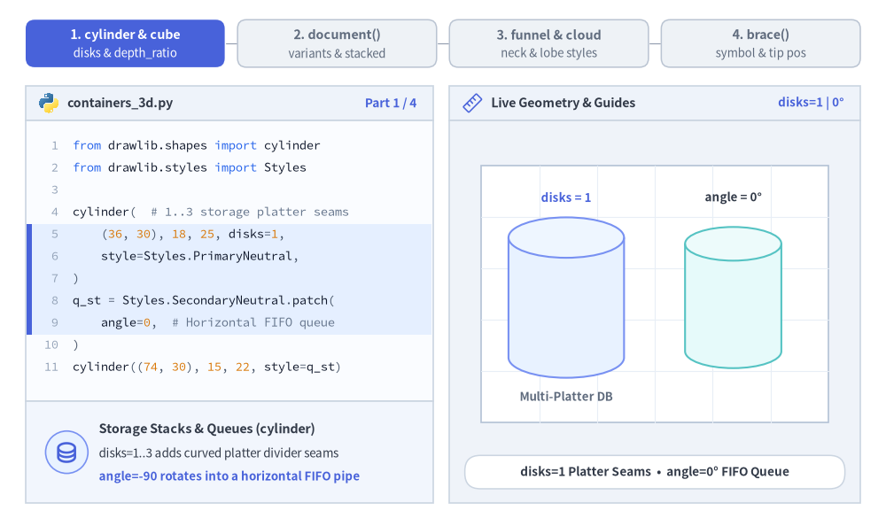
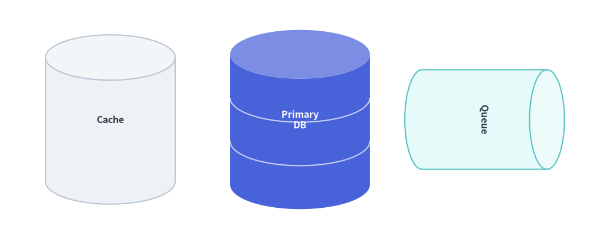
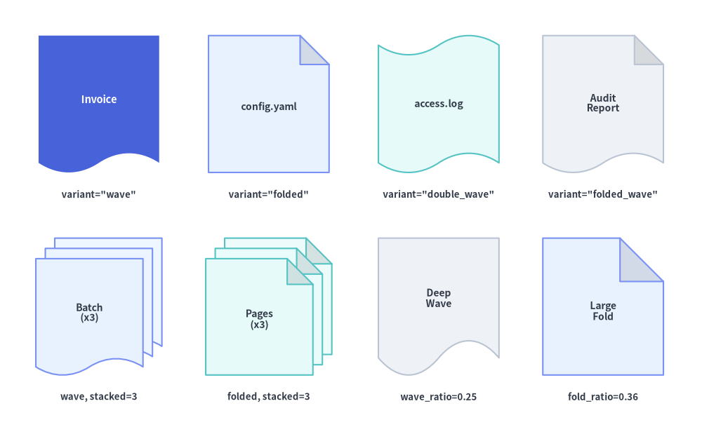
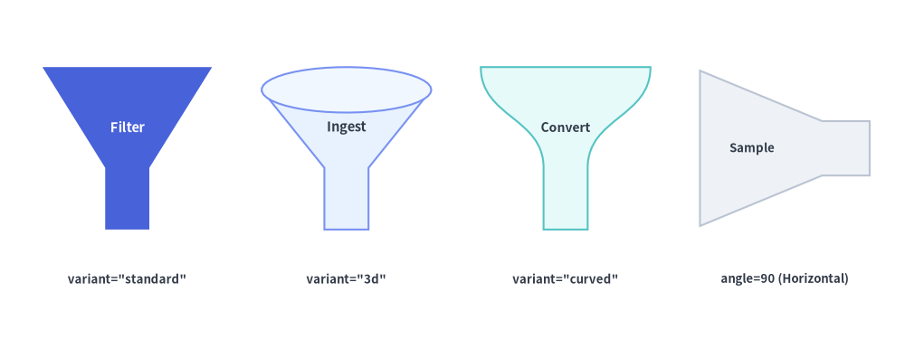
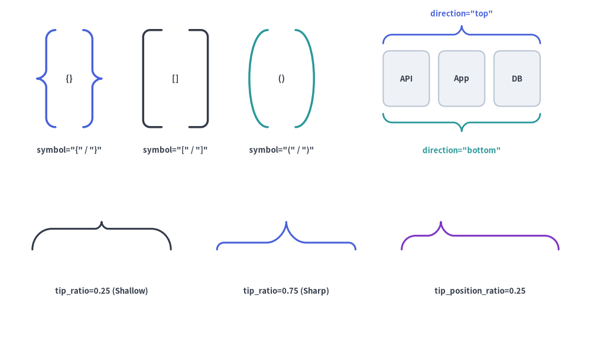

3D Containers, Flow & Grouping
The 3D Containers, Flow & Grouping category of drawlib.shapes provides 6 architectural and pipeline primitives: 3D multi-disk storage cylinders (cylinder), 3D shaded isometric cubes (cube), single or stacked document/file cards (document), data filtering and conversion funnels (funnel), cubic-Bézier cloud nodes and VPC boundaries (cloud), and curly/square/round grouping brackets (brace).

Source Code
from drawlib.canvas import save, setup
from drawlib.lines import line
from drawlib.shapes import brace, cloud, cube, cylinder, document, funnel
from drawlib.styles import Styles
from drawlib.text import text
setup(width=132, height=58)
lbl_dark = Styles.DarkBold.patch(text_size=10.0)
lbl_white = Styles.WhiteBold.patch(text_size=10.0)
# 1. Cloud Ingress
cloud(
(17, 30),
width=26,
height=18,
variant="flat",
style=Styles.PrimaryNeutral,
text="Cloud\nIngress",
text_style=lbl_dark,
)
# 2. 3D Filtering Funnel
funnel(
(49, 30),
width=22,
height=20,
variant="3d",
style=Styles.SecondaryNeutral,
text="ETL\nFilter",
text_style=lbl_dark.patch(xy_shift=(0, -1.8)),
)
# 3. 3D Worker Cube & 2-Disk State DB Cylinder
cube(
(80, 42),
width=22,
height=17,
depth_ratio=0.25,
style=Styles.PrimaryFlat,
text="Worker\nPod",
text_style=lbl_white,
)
cylinder(
(80, 18),
width=21,
height=17,
disks=2,
style=Styles.Neutral,
text="State DB",
text_style=lbl_dark,
)
# 4. Curly Brace + Stacked Audit Documents
brace(
(95.5, 30),
width=4.2,
height=40,
symbol="}",
style=Styles.PrimaryBold.patch(line_width=2.2),
)
document(
(115, 30),
width=23,
height=24,
variant="folded_wave",
stacked=3,
style=Styles.SecondaryNeutral,
text="Audit\nReports",
text_style=lbl_dark,
)
line((30.5, 30), (37, 30), arrow_head="->", style=Styles.DarkBold)
line((60.5, 34), (68, 41), arrow_head="->", style=Styles.DarkBold)
line((60.5, 26), (68, 19), arrow_head="->", style=Styles.DarkBold)
line((99, 30), (102.5, 30), arrow_head="->", style=Styles.PrimaryBold)
save()
1. Core Geometric Concepts
All 6 primitives in this category anchor at their bounding-box center xy and normalize their 3D projections, waves, lobes, and bracket spines strictly inside (width, height). Watch how multi-platter disks and angle=-90 rotation, 3-face depth_ratio shading, document variants and sheet stacking, funnel neck ratios, normalized cloud lobes, and sliding brace tips reshape each component:

Source Code
from __future__ import annotations
from drawlib.anim import Animation
from drawlib.canvas import save, setup
from drawlib.icons import code as code_icons
from drawlib.icons import phosphor
from drawlib.lines import line
from drawlib.shapes import brace, circle, cloud, cube, cylinder, document, funnel, rectangle
from drawlib.smartarts import SourceCode, SourceCodeStyles
from drawlib.styles import Styles
from drawlib.text import text
W, H = 138.0, 82.0
setup(width=W, height=H)
anim = Animation(fps=10.0, loop=0)
CODE_TEXT_SIZE = 10.0
PT_TO_CANVAS = W / 720.0
FONT_CANVAS = CODE_TEXT_SIZE * PT_TO_CANVAS
LINE_H = FONT_CANVAS * 1.8
PAD_Y = FONT_CANVAS * 1.2
CODE_STYLES = SourceCodeStyles.get("default", font_lang="en", text_size=CODE_TEXT_SIZE).patch(
box_style=Styles.Neutral.patch(shape_fill_color=(0, 0, 0, 0), shape_line_width=0),
)
PANE_HEADER = Styles.Neutral.patch(
shape_fill_color=(238, 243, 250),
shape_line_color=(203, 213, 225),
shape_line_width=1.2,
shape_r=0.0,
)
EDITOR_BODY = Styles.Neutral.patch(
shape_fill_color=(250, 252, 255),
shape_line_color=(203, 213, 225),
shape_line_width=1.2,
shape_r=0.0,
)
TAKEAWAY_BODY = Styles.Neutral.patch(
shape_fill_color=(242, 246, 253),
shape_line_color=(203, 213, 225),
shape_line_width=1.2,
shape_r=0.0,
)
STUDIO_BODY = Styles.Neutral.patch(
shape_fill_color=(239, 243, 249),
shape_line_color=(203, 213, 225),
shape_line_width=1.2,
shape_r=0.0,
)
PART_ITEMS = [
("1. cylinder & cube", "disks & depth_ratio"),
("2. document()", "variants & stacked"),
("3. funnel & cloud", "neck & lobe styles"),
("4. brace()", "symbol & tip pos"),
]
def draw_step_bar(active_part: int) -> None:
"""Draw top 4-part progress bar (active_part is 1..4)."""
pill_w = 31.0
pill_h = 7.4
gap = 2.0
start_x = 4.0 + pill_w / 2.0
cy = 75.2
for idx, (label, sublabel) in enumerate(PART_ITEMS, start=1):
cx = start_x + (idx - 1) * (pill_w + gap)
if idx > 1:
prev_cx = cx - (pill_w + gap)
line(
(prev_cx + pill_w / 2.0 + 0.2, cy),
(cx - pill_w / 2.0 - 0.2, cy),
style=Styles.PrimaryBold if idx <= active_part else Styles.MutedThin,
)
if idx == active_part:
st = Styles.PrimaryFlat.patch(shape_r=1.4)
tst = Styles.WhiteBold.patch(text_size=10.3)
sub_tst = Styles.White.patch(text_size=9.5)
elif idx < active_part:
st = Styles.PrimaryNeutral.patch(shape_r=1.4, shape_line_width=1.1)
tst = Styles.PrimaryBold.patch(text_size=10.3)
sub_tst = Styles.Primary.patch(text_size=9.5)
else:
st = Styles.Neutral.patch(shape_r=1.4, shape_line_width=1.1)
tst = Styles.MutedBold.patch(text_size=10.3)
sub_tst = Styles.Muted.patch(text_size=9.5)
rectangle((cx, cy), width=pill_w, height=pill_h, style=st)
text((cx, cy + 1.35), label, style=tst)
text((cx, cy - 1.55), sublabel, style=sub_tst)
def draw_left_pane(
active_part: int,
code_lines: list[str],
hl_range: tuple[int, int],
icon_fn: object,
summary_title: str,
summary_line1: str,
summary_line2: str,
) -> None:
"""Draw left Python code editor + bottom geometric concept note."""
x0, w = 4.0, 63.5
cx = x0 + w / 2.0
top_y = 63.2
header_h = 5.4
editor_h = 43.8
takeaway_h = 15.8
rectangle((cx, top_y + header_h / 2.0), width=w, height=header_h, style=PANE_HEADER)
code_icons.python((x0 + 3.6, top_y + header_h / 2.0), width=3.4, style=Styles.Neutral)
text(
(x0 + 6.5, top_y + header_h / 2.0),
"containers_3d.py",
style=Styles.DarkBold.patch(text_size=10.2, halign="left"),
)
text(
(x0 + w - 2.6, top_y + header_h / 2.0),
f"Part {active_part} / 4",
style=Styles.PrimaryBold.patch(text_size=9.8, halign="right"),
)
rectangle((cx, top_y - editor_h / 2.0), width=w, height=editor_h, style=EDITOR_BODY)
hl_start, hl_end = hl_range
hl_top = top_y - PAD_Y - hl_start * LINE_H
hl_bot = top_y - PAD_Y - (hl_end + 1) * LINE_H
hl_cy = (hl_top + hl_bot) / 2.0
hl_h = hl_top - hl_bot
rectangle(
(cx, hl_cy),
width=w - 0.6,
height=hl_h,
style=Styles.Neutral.patch(shape_fill_color=(229, 239, 255), shape_line_width=0),
)
rectangle(
(x0 + 0.55, hl_cy),
width=0.9,
height=hl_h,
style=Styles.PrimaryFlat.patch(shape_line_width=0),
)
SourceCode.draw(
xy=(x0, top_y),
width=w,
code="\n".join(code_lines),
styles=CODE_STYLES,
code_lang="python",
show_linenum=True,
align="top_left",
)
take_cy = 3.6 + takeaway_h / 2.0
rectangle((cx, take_cy), width=w, height=takeaway_h, style=TAKEAWAY_BODY)
circle(
(x0 + 6.4, take_cy),
radius=3.3,
style=Styles.PrimaryNeutral.patch(shape_line_width=1.2),
)
icon_fn((x0 + 6.4, take_cy), width=3.8, style=Styles.PrimaryBold) # type: ignore[operator]
text(
(x0 + 11.4, take_cy + 3.6),
summary_title,
style=Styles.DarkBold.patch(text_size=10.4, halign="left"),
)
text(
(x0 + 11.4, take_cy - 0.2),
summary_line1,
style=Styles.Dark.patch(text_size=9.7, halign="left"),
)
text(
(x0 + 11.4, take_cy - 3.8),
summary_line2,
style=Styles.PrimaryBold.patch(text_size=9.6, halign="left"),
)
def draw_geometry_studio(param_badge: str, footer_caption: str) -> tuple[float, float]:
"""Draw right geometry lab shell, inner coordinate sheet with subtle grid, and footer."""
x0, w = 70.0, 64.0
cx = x0 + w / 2.0
top_y = 63.2
header_h = 5.4
body_h = 59.6
rectangle((cx, top_y + header_h / 2.0), width=w, height=header_h, style=PANE_HEADER)
phosphor.ruler((x0 + 3.6, top_y + header_h / 2.0), width=3.4, style=Styles.Primary)
text(
(x0 + 6.5, top_y + header_h / 2.0),
"Live Geometry & Guides",
style=Styles.DarkBold.patch(text_size=10.2, halign="left"),
)
text(
(x0 + w - 2.6, top_y + header_h / 2.0),
param_badge,
style=Styles.PrimaryBold.patch(text_size=9.6, halign="right"),
)
rectangle((cx, 3.6 + body_h / 2.0), width=w, height=body_h, style=STUDIO_BODY)
# Inner coordinate sheet (54 x 40) with subtle grid lines
sheet_cx, sheet_cy = cx, 36.2
sheet_w, sheet_h = 54.0, 40.0
sx0, sy0 = sheet_cx - sheet_w / 2.0, sheet_cy - sheet_h / 2.0
rectangle(
(sheet_cx, sheet_cy),
width=sheet_w,
height=sheet_h,
style=Styles.Neutral.patch(
shape_fill_color=(255, 255, 255),
shape_line_color=(180, 194, 214),
shape_line_width=1.2,
),
)
g_st = Styles.MutedThin.patch(line_color=(232, 238, 246), line_width=0.8)
for gx in range(1, 6):
vx = sx0 + gx * (sheet_w / 6.0)
line((vx, sy0), (vx, sy0 + sheet_h), style=g_st)
for gy in range(1, 5):
vy = sy0 + gy * (sheet_h / 5.0)
line((sx0, vy), (sx0 + sheet_w, vy), style=g_st)
rectangle(
(cx, 8.4),
width=59.2,
height=5.2,
style=Styles.Neutral.patch(
shape_fill_color=(255, 255, 255),
shape_line_color=(203, 213, 225),
shape_line_width=1.1,
shape_r=2.4,
),
text=footer_caption,
text_style=Styles.DarkBold.patch(text_size=9.8),
)
return sheet_cx, sheet_cy
GHOST_BOX = Styles.MutedDashed.patch(
shape_fill_color=(0, 0, 0, 0),
shape_line_color=(176, 192, 214),
shape_line_width=1.1,
)
# =========================================================================
# Part 1: cylinder (disks & angle=-90 FIFO queue) and cube (depth_ratio)
# =========================================================================
for d_cnt, ang, dur in ((1, 0, 0.50), (2, -45, 0.50), (3, -90, 3.3)):
code_cyl = [
"from drawlib.shapes import cylinder",
"from drawlib.styles import Styles",
"",
"cylinder( # 1..3 storage platter seams",
f" (36, 30), 18, 25, disks={d_cnt},",
" style=Styles.PrimaryNeutral,",
")",
"q_st = Styles.SecondaryNeutral.patch(",
f" angle={ang}, # Horizontal FIFO queue",
")",
"cylinder((74, 30), 15, 22, style=q_st)",
]
with anim.frame(duration=dur):
draw_step_bar(1)
draw_left_pane(
1,
code_cyl,
(4, 8),
phosphor.database,
"Storage Stacks & Queues (cylinder)",
"disks=1..3 adds curved platter divider seams",
"angle=-90 rotates into a horizontal FIFO pipe",
)
scx, scy = draw_geometry_studio(
f"disks={d_cnt} | {ang}°",
f"disks={d_cnt} Platter Seams • angle={ang}° FIFO Queue",
)
cy_c = scy - 0.6
lx, rx = scx - 13.8, scx + 12.2
cylinder(
(lx, cy_c),
width=18.0,
height=25.0,
disks=d_cnt,
style=Styles.PrimaryNeutral,
)
text((lx, cy_c + 15.6), f"disks = {d_cnt}", style=Styles.PrimaryBold.patch(text_size=9.6))
text((lx, cy_c - 15.4), "Multi-Platter DB", style=Styles.MutedBold.patch(text_size=9.5))
cylinder(
(rx, cy_c),
width=15.0,
height=22.0,
style=Styles.SecondaryNeutral.patch(angle=ang),
)
text((rx, cy_c + 15.6), f"angle = {ang}°", style=Styles.DarkBold.patch(text_size=9.6))
if ang == -90:
line(
(rx - 9.0, cy_c - 11.6),
(rx + 9.0, cy_c - 11.6),
arrow_head="->",
style=Styles.PrimaryBold.patch(line_width=1.5),
)
text((rx, cy_c - 15.4), "Left → Right FIFO", style=Styles.PrimaryBold.patch(text_size=9.5))
for dr, dur in ((0.15, 0.50), (0.28, 0.50), (0.40, 3.3)):
code_cube = [
"from drawlib.shapes import cube",
"from drawlib.styles import Styles",
"",
"# Auto 3-face isometric shading",
"cube(",
" (50, 30), width=28, height=24,",
f" depth_ratio={dr:.2f},",
" style=Styles.PrimaryFlat,",
' text="Worker",',
")",
]
with anim.frame(duration=dur):
draw_step_bar(1)
draw_left_pane(
1,
code_cube,
(6, 6),
phosphor.cube,
"3-Face Shaded Block (cube)",
"Fits full 3D projection inside width × height",
"Auto-shades front, +light top, and -dark side",
)
scx, scy = draw_geometry_studio(
f"depth_ratio = {dr:.2f}",
f"cube(depth_ratio={dr:.2f}) • Auto 3-Face Shading",
)
cy_b = scy - 0.8
rectangle((scx, cy_b), width=28.0, height=24.0, style=GHOST_BOX)
cube(
(scx, cy_b),
width=28.0,
height=24.0,
depth_ratio=dr,
style=Styles.PrimaryFlat,
text="Worker",
text_style=Styles.WhiteBold.patch(text_size=10.5),
)
if dr >= 0.40:
text((scx, cy_b + 15.2), "Top Face (+28% Light)", style=Styles.PrimaryBold.patch(text_size=9.6))
text(
(scx + 15.6, cy_b + 1.0),
"Right\n(×0.82)",
style=Styles.DarkBold.patch(text_size=9.5, halign="left"),
)
text((scx, cy_b - 15.2), "Dashed = Exact 28 × 24 Box", style=Styles.MutedBold.patch(text_size=9.5))
# =========================================================================
# Part 2: document — variant ("wave" -> "folded" -> "folded_wave") & stacked
# =========================================================================
DOC_STATES = [
("wave", 1, "PrimaryNeutral", "Invoice", 3.2),
("folded", 2, "PrimaryNeutral", "Configs", 0.50),
("folded_wave", 3, "SecondaryNeutral", "Reports", 3.3),
]
for d_var, stk, st_name, d_lbl, dur in DOC_STATES:
code_doc = [
"from drawlib.shapes import document",
"from drawlib.styles import Styles",
"",
"document(",
" (50, 30), width=25, height=27,",
f' variant="{d_var}",',
f" stacked={stk},",
f" style=Styles.{st_name},",
f' text="{d_lbl}",',
")",
]
with anim.frame(duration=dur):
draw_step_bar(2)
draw_left_pane(
2,
code_doc,
(5, 6),
phosphor.files if stk > 1 else phosphor.file_text,
"Silhouettes & Stacks (document)",
"Variants mix bottom S-waves & dog-ear folds",
"stacked=1..3 cascades lightened back sheets",
)
scx, scy = draw_geometry_studio(
f'"{d_var}", ×{stk}',
f'variant="{d_var}", stacked={stk} • Bounded Stack',
)
cy_d = scy - 0.6
rectangle((scx, cy_d), width=25.0, height=27.0, style=GHOST_BOX)
document(
(scx, cy_d),
width=25.0,
height=27.0,
variant=d_var,
stacked=stk,
style=getattr(Styles, st_name),
text=d_lbl,
text_style=Styles.DarkBold.patch(text_size=10.2),
)
if d_var == "wave":
text((scx, cy_d + 16.0), "Straight Top Edge", style=Styles.MutedBold.patch(text_size=9.5))
text((scx, cy_d - 16.2), "Cubic-Bézier S-Wave Base", style=Styles.PrimaryBold.patch(text_size=9.6))
elif stk == 3:
text((scx, cy_d + 16.0), "3 Cascading Sheets + Dog-Ear Flap", style=Styles.PrimaryBold.patch(text_size=9.6))
text((scx, cy_d - 16.2), "All 3 Sheets Fit Exact 25 × 27 Box", style=Styles.DarkBold.patch(text_size=9.5))
# =========================================================================
# Part 3: funnel (neck ratios) & cloud (normalized lobe variants)
# =========================================================================
for nw_r, nh_r, dur in ((0.45, 0.25, 0.50), (0.22, 0.42, 3.3)):
code_fun = [
"from drawlib.shapes import funnel",
"from drawlib.styles import Styles",
"",
"funnel(",
" (50, 30), width=30, height=25,",
' variant="3d",',
f" neck_width_ratio={nw_r:.2f},",
f" neck_height_ratio={nh_r:.2f},",
" style=Styles.PrimaryNeutral,",
' text="Ingest",',
")",
]
with anim.frame(duration=dur):
draw_step_bar(3)
draw_left_pane(
3,
code_fun,
(6, 7),
phosphor.funnel,
"3D Rim & Spout Ratios (funnel)",
'variant="3d" adds a shaded elliptical top rim',
"neck_width/height_ratio tune the lower spout",
)
scx, scy = draw_geometry_studio(
f"neck_w = {nw_r:.2f}",
f'funnel("3d") • neck_w={nw_r:.2f}, neck_h={nh_r:.2f}',
)
cy_f = scy + 0.8
fw, fh = 30.0, 25.0
funnel(
(scx, cy_f),
width=fw,
height=fh,
variant="3d",
neck_width_ratio=nw_r,
neck_height_ratio=nh_r,
style=Styles.PrimaryNeutral,
text="Ingest",
text_style=Styles.DarkBold.patch(text_size=10.0, xy_shift=(0, -1.8)),
)
nw_half = 0.5 * fw * nw_r
y_bot = cy_f - fh / 2.0
y_neck = y_bot + fh * nh_r
line(
(scx - nw_half, y_bot - 2.4),
(scx + nw_half, y_bot - 2.4),
arrow_head="<->",
style=Styles.DangerBold.patch(line_width=1.5),
)
text(
(scx, y_bot - 5.4),
f"neck_width_ratio = {nw_r:.2f}",
style=Styles.DangerBold.patch(text_size=9.6),
)
line(
(scx + nw_half + 2.8, y_bot),
(scx + nw_half + 2.8, y_neck),
arrow_head="<->",
style=Styles.PrimaryBold.patch(line_width=1.5),
)
text(
(scx + nw_half + 4.4, 0.5 * (y_bot + y_neck)),
f"h×{nh_r:.2f}",
style=Styles.PrimaryBold.patch(text_size=9.5, halign="left"),
)
for c_var, dur in (("standard", 0.50), ("flat", 3.2), ("fluffy", 3.3)):
code_cld = [
"from drawlib.shapes import cloud",
"from drawlib.styles import Styles",
"",
"# Normalized strictly to width × height",
"cloud(",
" (50, 30), width=38, height=22,",
f' variant="{c_var}",',
" style=Styles.SecondaryNeutral,",
f' text="{c_var}",',
")",
]
with anim.frame(duration=dur):
draw_step_bar(3)
draw_left_pane(
3,
code_cld,
(6, 6),
phosphor.cloud,
"Normalized Bézier Lobes (cloud)",
"standard (8), flat (grounded), fluffy (12)",
"Every variant normalizes to exact width×height",
)
scx, scy = draw_geometry_studio(
f'variant="{c_var}"',
f'cloud(variant="{c_var}") • Normalized to 38 × 22',
)
cy_cl = scy - 0.8
rectangle((scx, cy_cl), width=38.0, height=22.0, style=GHOST_BOX)
cloud(
(scx, cy_cl),
width=38.0,
height=22.0,
variant=c_var,
style=Styles.SecondaryNeutral,
text=c_var,
text_style=Styles.DarkBold.patch(text_size=10.5),
)
line(
(scx - 19.0, cy_cl + 13.0),
(scx + 19.0, cy_cl + 13.0),
arrow_head="<->",
style=Styles.PrimaryBold.patch(line_width=1.4),
)
text((scx, cy_cl + 16.0), "width = 38 (Exact Span)", style=Styles.PrimaryBold.patch(text_size=9.6))
text((scx, cy_cl - 15.0), "Dashed = 38 × 22 Bounding Box", style=Styles.MutedBold.patch(text_size=9.5))
# =========================================================================
# Part 4: brace — symbol ("}" -> "]" -> ")") & tip_position_ratio
# =========================================================================
BRACE_STATES: list[tuple[str, float | None, float, tuple[int, int]]] = [
("}", 0.50, 3.2, (6, 6)),
("]", None, 0.50, (6, 6)),
(")", None, 3.2, (6, 6)),
("}", 0.25, 3.2, (6, 7)),
("}", 0.75, 3.3, (6, 7)),
]
for sym, tpr, dur, hl in BRACE_STATES:
tpr_line = f" tip_position_ratio={tpr:.2f}," if tpr is not None else " tip_position_ratio=None,"
code_brc = [
"from drawlib.shapes import brace",
"from drawlib.styles import Styles",
"",
"# Wraps left stack; tip points right",
"brace(",
" (50, 30), width=4.8, height=26.4,",
f' symbol="{sym}",',
tpr_line,
" style=Styles.PrimaryBold,",
")",
]
is_sliding = hl == (6, 7)
with anim.frame(duration=dur):
draw_step_bar(4)
draw_left_pane(
4,
code_brc,
hl,
phosphor.brackets_curly,
"Sliding Tip Position (brace)" if is_sliding else "Grouping Brackets (brace)",
"tip_position_ratio moves tip bottom→top (0..1)"
if is_sliding
else '"}" curly, "]" square, and ")" round families',
"0.25 targets bottom node; 0.75 targets top"
if is_sliding
else "Stroke uses style.line_color & style.line_width",
)
badge = f"tip_pos = {tpr:.2f}" if is_sliding and tpr is not None else f'symbol = "{sym}"'
foot = (
f'brace("}}", tip_position_ratio={tpr:.2f}) • Aimed Tip'
if tpr is not None
else f'brace(symbol="{sym}") • Wraps Stacked Node Cards'
)
scx, scy = draw_geometry_studio(badge, foot)
cy_br = scy - 0.8
bh = 26.4
# 3 stacked source node cards on the left
for idx_c, c_lbl in enumerate(("Pod 1", "Pod 2", "Pod 3")):
yc = cy_br + (1 - idx_c) * 7.6
rectangle(
(scx - 14.0, yc),
width=14.8,
height=5.8,
style=Styles.Neutral.patch(shape_r=1.3),
text=c_lbl,
text_style=Styles.DarkBold.patch(text_size=9.6),
)
# Central grouping brace
bx = scx - 1.5
brace(
(bx, cy_br),
width=4.8,
height=bh,
symbol=sym, # type: ignore[arg-type]
tip_position_ratio=tpr,
style=Styles.PrimaryBold,
)
# 3 target route nodes on the right (at +6.6, 0.0, -6.6 = exact 0.75, 0.50, 0.25 tip positions)
targets = (("Node A", 0.75, 6.6), ("Node B", 0.50, 0.0), ("Node C", 0.25, -6.6))
for t_lbl, t_ratio, dy in targets:
yt = cy_br + dy
is_hit = sym == "}" and tpr == t_ratio
t_st = Styles.PrimaryFlat.patch(shape_r=1.3) if is_hit else Styles.PrimaryNeutral.patch(shape_r=1.3)
t_tst = Styles.WhiteBold.patch(text_size=9.6) if is_hit else Styles.DarkBold.patch(text_size=9.6)
rectangle((scx + 14.2, yt), width=15.4, height=5.2, style=t_st, text=t_lbl, text_style=t_tst)
if is_hit:
line(
(bx + 2.9, yt),
(scx + 6.0, yt),
arrow_head="->",
style=Styles.PrimaryBold.patch(line_width=1.8),
)
top_note = (
f"tip_position_ratio = {tpr:.2f}"
if tpr is not None
else ('Square Bracket "]"' if sym == "]" else 'Round Parenthesis ")"')
)
text((scx, cy_br + 16.0), top_note, style=Styles.PrimaryBold.patch(text_size=9.6))
save()
- 3D Depth & Platter Tiers (
cylinder,cube):cylinderadds curved platter seams viadisks(and rotates into a horizontal queue viaangle=-90), whilecubeauto-shades 3 faces acrossdepth_ratio. - Document Variants & Sheet Cascading (
document): Combines wavy bases and darkened top-right dog-ear flaps ("wave","folded","folded_wave"), cascading lightened background sheets whenstacked > 1. - Spout Ratios & Normalized Cloud Lobes (
funnel,cloud):funneltunes lower spout dimensions vianeck_width_ratioandneck_height_ratio, while everycloudvariant normalizes its cubic-Bézier lobes strictly inside(width, height). - Grouping Brackets & Sliding Tips (
brace): Supports curly ("{}"), square ("[]"withshape_r90°corner rounding), and round ("()") strokes, plustip_position_ratio(0.0..1.0) to aim curly tips at a specific target node.
2. Quick Comparison of 3D Container, Flow & Grouping Primitives
Use the summary matrix below to compare anchoring, architectural roles, geometry arguments, and automatic shading across all 6 functions:
| Function | Default Anchor | Primary Architectural Role | Variants & Key Geometry Arguments | Shading & Text Placement |
|---|---|---|---|---|
cylinder |
Center (cx, cy) |
Relational DBs, disk arrays, object stores, FIFO queues | disks: int = 1, style.patch(angle=-90) |
Top elliptical cap automatically lightened; text centered on body. |
cube |
Center (cx, cy) |
3D compute nodes, containers, hardware appliances | depth_ratio: float | None = None (default 0.25) |
3-face automatic shading (front, lightened top, darkened right); text centered on front face. |
document |
Center (cx, cy) |
Printouts, config files, log snippets, report stacks | variant ("wave", "folded", "double_wave", "folded_wave"), stacked: int = 1, wave_ratio, fold_ratio |
Darkened corner fold flap & lightened background stack sheets; text centered on front sheet. |
funnel |
Center (cx, cy) |
Data filtering stages, event reducers, conversion funnels | variant ("standard", "3d", "curved"), neck_width_ratio, neck_height_ratio |
"3d" variant renders a shaded elliptical top rim; text centered in upper cone. |
cloud |
Center (cx, cy) |
External cloud/SaaS nodes, VPC/WAN dashed boundaries | variant ("standard", "flat", "fluffy", "simple"), bump_ratio |
Smooth cubic-Bézier lobes strictly normalized to (width, height). |
brace |
Center (cx, cy) |
Curly, square, and round grouping brackets/braces | symbol ("{}", "[]", "()"), direction ("left", "right", "top", "bottom"), tip_ratio, tip_position_ratio |
Open vector stroke controlled by style.line_width and style.line_color. |
3. 3D Cylinders & Database Stacks (cylinder)
For relational databases, object storage buckets, disk arrays, and message queues, cylinder renders a 3D cylindrical container with an automatically lightened elliptical top cap:
cylinder(
xy: tuple[float, float],
width: float,
height: float,
*,
style: Style,
disks: int = 1,
text: str = "",
text_style: Style | None = None,
) -> None
Parameter Reference
| Parameter | Type | Default | Description |
|---|---|---|---|
xy |
tuple[float, float] |
Required | Center coordinate (x, y) of the outer cylinder bounding box. |
width |
float |
Required | Total horizontal width of the cylinder (> 0). |
height |
float |
Required | Total vertical height of the cylinder, including top and bottom elliptical caps (> 0). |
disks |
int |
1 |
Number of stacked storage disk tiers (>= 1). When disks >= 2, curved horizontal divider seams are drawn along the cylinder body to represent multi-platter database storage. |
style |
Style |
Required | Shape fill and border style. The top elliptical cap is automatically lightened from style.shape_fill_color. Set style.patch(angle=-90) to rotate the cylinder horizontally for FIFO message queues or pipelines. |
text / text_style |
str / Style | None |
"" / None |
Centered text label and optional typography override. |
from drawlib.canvas import save, setup
from drawlib.shapes import cylinder
from drawlib.styles import Styles
setup(width=118, height=48)
# 1. Single-tier cache cylinder
cylinder(
(22, 24),
width=26,
height=34,
style=Styles.Neutral,
text="Cache",
text_style=Styles.DarkBold.patch(text_size=11.5),
)
# 2. 3-disk database stack (disks=3)
cylinder(
(60, 24),
width=28,
height=36,
disks=3,
style=Styles.PrimaryFlat,
text="Primary\nDB",
text_style=Styles.WhiteBold.patch(text_size=11.5),
)
# 3. Horizontal rotated cylinder (angle=-90 for message queue)
cylinder(
(97, 24),
width=20,
height=32,
style=Styles.SecondaryNeutral.patch(angle=-90),
text="Queue",
text_style=Styles.DarkBold.patch(text_size=11.5),
)
save()

4. 3D Cubes & Rectangular Blocks (cube)
Complementing cylinder, cube renders an oblique 3D cube or rectangular box strictly fitted within the (width, height) bounding box centered at xy:
cube(
xy: tuple[float, float],
width: float,
height: float,
*,
depth_ratio: float | None = None,
style: Style,
text: str = "",
text_style: Style | None = None,
) -> None
Parameter Reference
| Parameter | Type | Default | Description |
|---|---|---|---|
xy |
tuple[float, float] |
Required | Center coordinate (x, y) of the outer 3D bounding box. |
width |
float |
Required | Exact outer horizontal width of the 3D box, including the right-side oblique projection (> 0). |
height |
float |
Required | Exact outer vertical height of the 3D box, including the top-face oblique projection (> 0). |
depth_ratio |
float | None |
None |
3D oblique depth fraction in (0.0, 1.0) relative to min(width, height). Defaults to 0.25 when None. Smaller values (0.15) produce a shallow 3D card; larger values (0.40) produce a deep isometric block. |
style |
Style |
Required | Fill, border (shape_line_color, shape_line_width, shape_line_style), and rotation (angle) style. |
text / text_style |
str / Style | None |
"" / None |
Label automatically centered on the front face (rather than the outer bounding box) so text never collides with the 3D seam lines. |
3-Face Automatic Shading & Stroke Mechanics
- Automatic Face Shading: From
style.shape_fill_color, Drawlib automatically computes three distinct face shades:- Front Face: Base
style.shape_fill_color. - Top Face: Lightened toward white (
+28%on standard fills,+55%on high-luminance neutral fills) to simulate overhead lighting. - Right Side Face: Darkened (
×0.82on standard fills,×0.92on neutral fills) to create natural depth shadow.
- Front Face: Base
- Unified Stroke Path: The outer perimeter and the three internal Y-seams are drawn in a single unified
PathPatch, ensuring thatDashedorDottedline styles never double-overlap on shared edges.
from drawlib.canvas import save, setup
from drawlib.shapes import cube
from drawlib.styles import Styles
from drawlib.text import text
setup(width=126, height=48)
# 1. Standard Flat Cube (depth_ratio=0.25 default)
cube(
(18, 27),
width=23,
height=23,
style=Styles.PrimaryFlat,
text="Pod A",
text_style=Styles.WhiteBold.patch(text_size=10.5),
)
text((18, 9), "depth_ratio=0.25 (Flat)", style=Styles.DarkBold.patch(text_size=9.5))
# 2. Shallow 3D Block (depth_ratio=0.15)
cube(
(49, 27),
width=23,
height=23,
depth_ratio=0.15,
style=Styles.PrimaryNeutral,
text="Shallow",
text_style=Styles.DarkBold.patch(text_size=10.5),
)
text((49, 9), "depth_ratio=0.15", style=Styles.DarkBold.patch(text_size=9.5))
# 3. Deep 3D Cube (depth_ratio=0.40)
cube(
(80, 27),
width=23,
height=23,
depth_ratio=0.40,
style=Styles.SecondaryNeutral,
text="Deep",
text_style=Styles.DarkBold.patch(text_size=10.5),
)
text((80, 9), "depth_ratio=0.40", style=Styles.DarkBold.patch(text_size=9.5))
# 4. Wide Hardware Appliance Block (26x19, dashed)
cube(
(111, 27),
width=26,
height=19,
depth_ratio=0.24,
style=Styles.Neutral.patch(shape_line_style="dashed"),
text="Appliance",
text_style=Styles.DarkBold.patch(text_size=10.0),
)
text((111, 9), "Wide Block (Dashed)", style=Styles.DarkBold.patch(text_size=9.5))
save()

5. Documents, Files & Multi-Sheet Stacks (document)
For flowchart output steps, configuration/source files, log stream snippets, and multi-page report stacks, document provides four variant silhouettes and multi-sheet cascading (stacked >= 1):
document(
xy: tuple[float, float],
width: float,
height: float,
*,
variant: Literal[
"wave", "standard",
"folded", "page", "note",
"double_wave", "snippet",
"folded_wave", "report",
] = "wave",
stacked: int = 1,
wave_ratio: float | None = None,
fold_ratio: float | None = None,
style: Style,
text: str = "",
text_style: Style | None = None,
) -> None
Parameter Reference
| Parameter | Type | Default | Description |
|---|---|---|---|
xy |
tuple[float, float] |
Required | Center coordinate (x, y) of the outer document bounding box (including all stacked sheets). |
width |
float |
Required | Total horizontal width of the document bounding box (> 0). |
height |
float |
Required | Total vertical height of the document bounding box (> 0). |
variant |
DocumentVariant |
"wave" |
Silhouette style of the document sheet (see Document variant Reference below). |
stacked |
int |
1 |
Number of overlapping document sheets (>= 1). When stacked > 1 (e.g. 2 or 3), sheets cascade from back-top-right to front-bottom-left inside (width, height), with background sheets automatically lightened. |
wave_ratio |
float | None |
None |
Wave peak-to-trough amplitude fraction in (0.0, 1.0) relative to sheet height. Defaults to 0.14. Effective on "wave", "double_wave", and "folded_wave". |
fold_ratio |
float | None |
None |
Top-right dog-ear corner fold size fraction in (0.0, 1.0) relative to min(sheet_w, sheet_h). Defaults to 0.24. Effective on "folded" and "folded_wave". |
style |
Style |
Required | Fill, border, and rotation (angle) style. On folded variants, the triangular corner flap is automatically darkened for 3D contrast. |
text / text_style |
str / Style | None |
"" / None |
Text label optically centered on the front-most sheet (automatically shifted away from bottom waves and top-right corner folds). |
Document variant Reference
variant |
Accepted Aliases | Top Edge | Bottom Edge | Active Ratio Args | Typical Use Cases |
|---|---|---|---|---|---|
"wave" (default) |
"standard" |
Straight | Cubic-Bézier S-wave | wave_ratio |
Classic ISO flowchart document/printout symbol, invoices, generated artifacts. |
"folded" |
"page", "note" |
Top-right dog-ear fold | Straight | fold_ratio |
Configuration files (config.yaml), source code files, Markdown/PDF pages, UML notes. |
"double_wave" |
"snippet" |
Cubic-Bézier S-wave | Cubic-Bézier S-wave | wave_ratio |
Continuous log streams (access.log), truncated text excerpts, data stream chunks. |
"folded_wave" |
"report" |
Top-right dog-ear fold | Cubic-Bézier S-wave | wave_ratio, fold_ratio |
Multi-page technical reports, specifications, and audit logs combining file and wave cues. |
from drawlib.canvas import save, setup
from drawlib.shapes import document
from drawlib.styles import Styles
from drawlib.text import text
setup(width=128, height=78)
# Row 1: The 4 Document Variants (stacked=1)
row1 = [
("wave", "Invoice", 18, Styles.PrimaryFlat, Styles.WhiteBold.patch(text_size=10.5), 'variant="wave"'),
("folded", "config.yaml", 49, Styles.PrimaryNeutral, Styles.DarkBold.patch(text_size=10.0), 'variant="folded"'),
("double_wave", "access.log", 80, Styles.SecondaryNeutral, Styles.DarkBold.patch(text_size=10.0), 'variant="double_wave"'),
("folded_wave", "Audit\nReport", 110, Styles.Neutral, Styles.DarkBold.patch(text_size=10.0), 'variant="folded_wave"'),
]
for var, lbl, cx, st, tst, cap in row1:
document((cx, 59), width=22, height=25, variant=var, style=st, text=lbl, text_style=tst)
text((cx, 42.5), cap, style=Styles.DarkBold.patch(text_size=9.5))
# Row 2: Multi-sheet stacking (stacked=3) and wave_ratio / fold_ratio customization
document(
(18, 22),
width=23,
height=25,
variant="wave",
stacked=3,
style=Styles.PrimaryNeutral,
text="Batch\n(x3)",
text_style=Styles.DarkBold.patch(text_size=10.0),
)
text((18, 5.5), "wave, stacked=3", style=Styles.DarkBold.patch(text_size=9.5))
document(
(49, 22),
width=23,
height=25,
variant="folded",
stacked=3,
style=Styles.SecondaryNeutral,
text="Pages\n(x3)",
text_style=Styles.DarkBold.patch(text_size=10.0),
)
text((49, 5.5), "folded, stacked=3", style=Styles.DarkBold.patch(text_size=9.5))
document(
(80, 22),
width=22,
height=25,
variant="wave",
wave_ratio=0.25,
style=Styles.Neutral,
text="Deep\nWave",
text_style=Styles.DarkBold.patch(text_size=10.0),
)
text((80, 5.5), "wave_ratio=0.25", style=Styles.DarkBold.patch(text_size=9.5))
document(
(110, 22),
width=22,
height=25,
variant="folded",
fold_ratio=0.36,
style=Styles.PrimaryNeutral,
text="Large\nFold",
text_style=Styles.DarkBold.patch(text_size=10.0),
)
text((110, 5.5), "fold_ratio=0.36", style=Styles.DarkBold.patch(text_size=9.5))
save()

6. Data Filtering & Conversion Funnels (funnel)
For ETL data filtering pipelines, event deduplication stages, rate limiters, and conversion funnels, funnel renders a wide upper cone tapering into a narrow lower spout:
funnel(
xy: tuple[float, float],
width: float,
height: float,
*,
variant: Literal[
"standard", "flat",
"3d", "cylinder",
"curved",
] = "standard",
neck_width_ratio: float | None = None,
neck_height_ratio: float | None = None,
style: Style,
text: str = "",
text_style: Style | None = None,
) -> None
Parameter & variant Reference
| Parameter | Type | Default | Description |
|---|---|---|---|
xy |
tuple[float, float] |
Required | Center coordinate (x, y) of the funnel bounding box. |
width / height |
float |
Required | Total top rim width (> 0) and total vertical height (> 0). |
variant |
FunnelVariant |
"standard" |
Funnel silhouette and shading style (see Funnel variant Comparison below). |
neck_width_ratio |
float | None |
None |
Spout neck width as a fraction of width in [0.08, 0.85]. Defaults to 0.28 when None. |
neck_height_ratio |
float | None |
None |
Spout neck height as a fraction of height in [0.05, 0.75]. Defaults to 0.36 when None. |
style |
Style |
Required | Fill, border, and rotation (angle, e.g. angle=-90 for a horizontal left-to-right filter). |
text / text_style |
str / Style | None |
"" / None |
Label automatically centered in the wide upper cone section. |
variant |
Accepted Aliases | Geometry & Shading | Typical Use Cases |
|---|---|---|---|
"standard" (default) |
"flat" |
Flat 2D trapezoidal upper cone + vertical rectangular spout | Clean 2D flowchart filtering gates, SQL WHERE filters, and horizontal pipeline reducers. |
"3d" |
"cylinder" |
3D funnel with a darkened elliptical top opening rim | Data lake ingestion funnels, telemetry collectors, and 3D architecture diagrams alongside cylinder and cube. |
"curved" |
— | Smooth cubic-Bézier S-curve walls tapering seamlessly into the neck | Marketing/analytics conversion funnels and smooth stream aggregators. |
from drawlib.canvas import save, setup
from drawlib.shapes import funnel
from drawlib.styles import Styles
from drawlib.text import text
setup(width=128, height=48)
lbl = Styles.DarkBold.patch(text_size=9.5)
# 1. Standard 2D funnel
funnel(
(18, 27),
width=24,
height=23,
variant="standard",
style=Styles.PrimaryFlat,
text="Filter",
text_style=Styles.WhiteBold.patch(text_size=10.5),
)
text((18, 8.5), 'variant="standard"', style=lbl)
# 2. 3D shaded elliptical-top funnel
funnel(
(49, 27),
width=24,
height=23,
variant="3d",
style=Styles.PrimaryNeutral,
text="Ingest",
text_style=Styles.DarkBold.patch(text_size=10.5),
)
text((49, 8.5), 'variant="3d"', style=lbl)
# 3. Smooth cubic-Bézier curved funnel
funnel(
(80, 27),
width=24,
height=23,
variant="curved",
style=Styles.SecondaryNeutral,
text="Convert",
text_style=Styles.DarkBold.patch(text_size=10.0),
)
text((80, 8.5), 'variant="curved"', style=lbl)
# 4. Horizontal rotated funnel (angle=90 -> left-to-right reducer)
funnel(
(111, 27),
width=22,
height=24,
variant="standard",
neck_width_ratio=0.35,
neck_height_ratio=0.28,
style=Styles.Neutral.patch(angle=90),
text="Sample",
text_style=Styles.DarkBold.patch(text_size=9.5, angle=0, xy_shift=(0, 1.5)),
)
text((111, 8.5), "angle=90 (Horizontal)", style=lbl)
save()

7. Cloud Nodes & Boundaries (cloud)
cloud renders a smooth cubic-Bézier cloud silhouette normalized to fit its exact (width, height) bounding box centered at xy:
cloud(
xy: tuple[float, float],
width: float,
height: float,
*,
variant: Literal[
"standard",
"flat", "flat_bottom",
"fluffy", "dense",
"simple", "minimal",
] = "standard",
bump_ratio: float | None = None,
style: Style,
text: str = "",
text_style: Style | None = None,
) -> None
Parameter Reference
| Parameter | Type | Default | Description |
|---|---|---|---|
xy |
tuple[float, float] |
Required | Center coordinate (x, y) of the cloud bounding box. |
width |
float |
Required | Exact outer horizontal width of the cloud (> 0). |
height |
float |
Required | Exact outer vertical height of the cloud (> 0). |
variant |
CloudVariant |
"standard" |
Cloud silhouette style (see Cloud variant Reference below). |
bump_ratio |
float | None |
None |
Outward lobe bulge depth ratio in (0.0, 1.0). When None, uses the optimal default for the selected variant (0.20–0.24). Lower values (0.12) create a subtle, shallow cloud; higher values (0.34) create deep, pronounced lobes. |
style |
Style |
Required | Fill, border (Dashed is ideal for VPC/subnet enclosures), and rotation (angle) style. |
text / text_style |
str / Style | None |
"" / None |
Centered text label and optional typography override. |
Cloud variant Reference
variant |
Accepted Aliases | Lobe Structure | Default bump_ratio |
Typical Use Cases |
|---|---|---|---|---|
"standard" (default) |
— | 8 asymmetric lobes around the full perimeter | 0.22 |
General-purpose "Internet", SaaS, or external network nodes. |
"flat" |
"flat_bottom" |
Flat horizontal base + 4 upper domes | 0.24 |
Standalone cloud service cards and gateway nodes with strong visual grounding for internal text/icons. |
"fluffy" |
"dense" |
12 fine lobes around the full perimeter | 0.20 |
Large VPC, WAN, or multi-node cluster boundary enclosures (especially with shape_line_style="dashed"). |
"simple" |
"minimal" |
6 wide, symmetric lobes | 0.24 |
Compact cloud badges, small icons, or thought bubbles. |
from drawlib.canvas import save, setup
from drawlib.shapes import cloud, rectangle
from drawlib.styles import Styles
from drawlib.text import text
setup(width=126, height=74)
# Row 1: The 4 Cloud Variants
variants = [
("standard", 18, Styles.PrimaryFlat, Styles.WhiteBold.patch(text_size=10.5)),
("flat", 48, Styles.PrimaryNeutral, Styles.DarkBold.patch(text_size=10.5)),
("fluffy", 78, Styles.SecondaryNeutral, Styles.DarkBold.patch(text_size=10.5)),
("simple", 108, Styles.Neutral, Styles.DarkBold.patch(text_size=10.5)),
]
for v_name, cx, st, tst in variants:
cloud((cx, 57), width=26, height=17, variant=v_name, style=st, text=v_name, text_style=tst)
text((cx, 43), f'variant="{v_name}"', style=Styles.DarkBold.patch(text_size=9.5))
# Row 2 Left: Shallow vs Deep bump_ratio
cloud(
(20, 22),
width=26,
height=17,
variant="standard",
bump_ratio=0.12,
style=Styles.Neutral,
text="Shallow",
text_style=Styles.DarkBold.patch(text_size=10.0),
)
text((20, 7.5), "bump_ratio=0.12", style=Styles.DarkBold.patch(text_size=9.5))
cloud(
(52, 22),
width=26,
height=17,
variant="standard",
bump_ratio=0.35,
style=Styles.PrimaryNeutral,
text="Deep Lobes",
text_style=Styles.DarkBold.patch(text_size=10.0),
)
text((52, 7.5), "bump_ratio=0.35", style=Styles.DarkBold.patch(text_size=9.5))
# Row 2 Right: Large fluffy dashed VPC enclosure containing service cards
cloud((96, 22), width=50, height=24, variant="fluffy", style=Styles.SecondaryNeutral.patch(shape_line_style="dashed"))
rectangle((86, 21), width=14, height=10, style=Styles.Neutral.patch(shape_r=1.5), text="API", text_style=Styles.DarkBold.patch(text_size=9.5))
rectangle((106, 21), width=14, height=10, style=Styles.PrimaryFlat.patch(shape_r=1.5), text="App", text_style=Styles.WhiteBold.patch(text_size=9.5))
text((96, 7.5), 'variant="fluffy" (Dashed VPC Boundary)', style=Styles.DarkBold.patch(text_size=9.5))
save()

8. Grouping Braces & Brackets (brace)
brace renders a curly ({, }), square ([, ]), or round ((, )) grouping bracket in any of four directions ("left", "right", "top", "bottom"), with stroke thickness controlled via style.line_width:
brace(
xy: tuple[float, float],
width: float,
height: float,
*,
symbol: Literal[
"{", "}", "{}", "curly",
"[", "]", "[]", "square",
"(", ")", "()", "round",
] = "{",
direction: Literal["left", "right", "top", "bottom"] | None = None,
tip_ratio: float | None = None,
tip_position_ratio: float | None = None,
style: Style,
text: str = "",
text_style: Style | None = None,
) -> None
Parameter Reference
| Parameter | Type | Default | Description |
|---|---|---|---|
xy |
tuple[float, float] |
Required | Center coordinate (x, y) of the brace bounding box. |
width |
float |
Required | Horizontal width of the brace bounding box (> 0). For vertical braces ("left" / "right"), width is the bracket depth; for horizontal braces ("top" / "bottom"), width is the span length. |
height |
float |
Required | Vertical height of the brace bounding box (> 0). For vertical braces ("left" / "right"), height is the span length; for horizontal braces ("top" / "bottom"), height is the bracket depth. |
symbol |
BraceSymbol |
"{" |
Bracket family and default orientation (see symbol Variants below). |
direction |
BraceDirection | None |
None |
Which side of a grouped region the bracket is placed on (the direction the outer spine/tip points toward): "left", "right", "top", or "bottom" (see direction Variants below). |
tip_ratio |
float | None |
None |
Curly brace ({}) only: Fraction of the bracket depth occupied by the central outward tip in (0.0, 1.0). Defaults to 0.50. Higher values (0.70) create a sharp protruding tip; lower values (0.25) create a subtle tip. |
tip_position_ratio |
float | None |
None |
Curly brace ({}) only: Position of the central tip along the span axis in (0.0, 1.0) (measured bottom-to-top for "left"/"right", or left-to-right for "top"/"bottom"). Defaults to 0.50 (symmetric center). |
style |
Style |
Required | Stroke thickness is controlled via style.line_width (or style.shape_line_width), color via style.line_color (or style.shape_line_color), line pattern via style.line_style, and rotation via style.angle. On "square" brackets ([, ]), style.shape_r rounds the two 90° corners. |
text / text_style |
str / Style | None |
"" / None |
Optional text label centered at xy and typography override. |
symbol & direction Variants
symbol Values |
Bracket Family | Auto direction (when direction=None) |
Supported Geometry Modifiers |
|---|---|---|---|
"{", "{}", "curly" |
Curly brace { |
"left" (tip points left, ends curl right) |
tip_ratio, tip_position_ratio |
"}" |
Curly brace } |
"right" (tip points right, ends curl left) |
tip_ratio, tip_position_ratio |
"[", "[]", "square" |
Square bracket [ |
"left" (spine on left, ends point right) |
style.patch(shape_r=...) corner rounding |
"]" |
Square bracket ] |
"right" (spine on right, ends point left) |
style.patch(shape_r=...) corner rounding |
"(", "()", "round" |
Round parenthesis ( |
"left" (arc bows left, ends point right) |
Smooth cubic-Bézier arch |
")" |
Round parenthesis ) |
"right" (arc bows right, ends point left) |
Smooth cubic-Bézier arch |
direction Value |
Orientation | Spine / Tip Points Toward | Open Ends Point Toward |
|---|---|---|---|
"left" |
Vertical (span = height) |
Left (-X) |
Right (+X, wrapping items to its right) |
"right" |
Vertical (span = height) |
Right (+X) |
Left (-X, wrapping items to its left) |
"top" |
Horizontal (span = width) |
Top (+Y) |
Bottom (-Y, wrapping items below it) |
"bottom" |
Horizontal (span = width) |
Bottom (-Y) |
Top (+Y, wrapping items above it) |
from drawlib.canvas import save, setup
from drawlib.shapes import brace, rectangle
from drawlib.styles import Styles
from drawlib.text import text
setup(width=128, height=74)
# Row 1 Left: Three Bracket Families: { } , [ ] , ( )
families = [
("{}", "{", "}", 15, Styles.PrimaryBold.patch(line_width=2.5)),
("[]", "[", "]", 38, Styles.DarkBold.patch(line_width=2.5, shape_r=1.5)),
("()", "(", ")", 61, Styles.SecondaryBold.patch(line_width=2.5)),
]
for label, sym_l, sym_r, cx, st in families:
brace((cx - 5, 57), width=4.0, height=21, symbol=sym_l, style=st)
brace((cx + 5, 57), width=4.0, height=21, symbol=sym_r, style=st)
text((cx, 57), label, style=Styles.DarkBold.patch(text_size=10.5))
text((cx, 41.5), f'symbol="{sym_l}" / "{sym_r}"', style=Styles.DarkBold.patch(text_size=9.5))
# Row 1 Right: All 4 Directions (top, bottom, left, right) around a card group
for idx, name in enumerate(("API", "App", "DB")):
rx = 88 + idx * 12
rectangle((rx, 57), width=10, height=12, style=Styles.Neutral.patch(shape_r=1.5), text=name, text_style=Styles.DarkBold.patch(text_size=9.5))
brace((100, 66.5), width=34, height=3.8, symbol="{", direction="top", style=Styles.PrimaryBold.patch(line_width=2.0))
text((100, 71.0), 'direction="top"', style=Styles.PrimaryBold.patch(text_size=9.5))
brace((100, 47.5), width=34, height=3.8, symbol="{", direction="bottom", style=Styles.SecondaryBold.patch(line_width=2.0))
text((100, 41.5), 'direction="bottom"', style=Styles.SecondaryBold.patch(text_size=9.5))
# Row 2: Curly brace tip_ratio & tip_position_ratio variations
brace((22, 23), width=30, height=6.0, symbol="{", direction="top", tip_ratio=0.25, style=Styles.DarkBold.patch(line_width=2.2))
text((22, 11), "tip_ratio=0.25 (Shallow)", style=Styles.DarkBold.patch(text_size=9.5))
brace((62, 23), width=30, height=6.0, symbol="{", direction="top", tip_ratio=0.75, style=Styles.PrimaryBold.patch(line_width=2.2))
text((62, 11), "tip_ratio=0.75 (Sharp)", style=Styles.DarkBold.patch(text_size=9.5))
brace((104, 23), width=34, height=6.0, symbol="{", direction="top", tip_position_ratio=0.25, style=Styles.AccentBold.patch(line_width=2.2))
text((104, 11), "tip_position_ratio=0.25", style=Styles.DarkBold.patch(text_size=9.5))
save()
